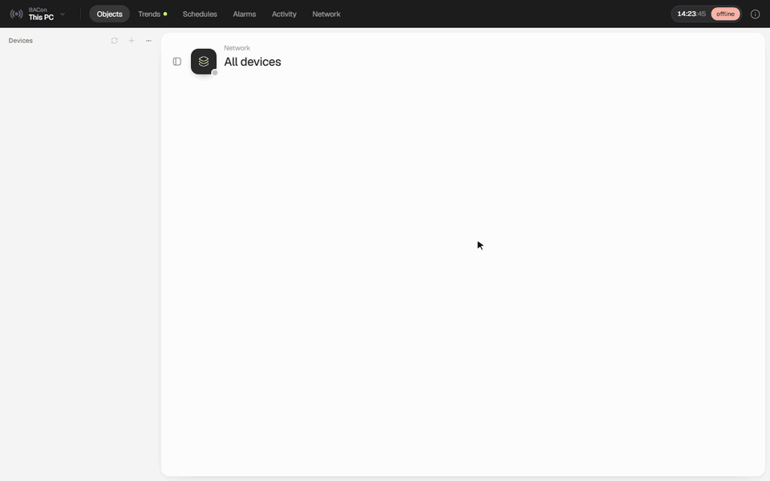

BACnet, on site.
Read every property of every object, find faults in one line, and export it all to Excel.

The site visit, in one app.
Each one names the BACnet service it runs on. Nothing is mocked up: it's what the controller answers.
Built on site, for site.
points with an Input/Output address [3019], and no way to export them.
I needed the I/O address of every point and couldn't get the XWorks file off the controller.
The explorers I had either couldn't export properties or left the vendor ones out. So I built one that reads everything, then kept adding what I reach for on every visit.
Yes, it's yet another BACnet explorer.Copy a query, find the fault.
and, or, not and brackets combine them. Case doesn't matter.
It looks. It never touches.
Plug into a live building without a second thought. COV subscriptions even expire on their own if your laptop disappears.
UsesReads
NeverWrites
Before you plug in.
"Windows protected your PC". Is it safe?
It won't connect, or finds no devices
Does it read vendor properties?
Input/Output address [3019].Can I use it without a network?
.bxsite file while connected, then open it anywhere to browse, query, export, and see schedules and alarms as they were read.Take it to your next site.
Free, open source (MIT) and read-only. Tell me what's missing.
First run may show "Windows protected your PC": More info, then Run anyway.